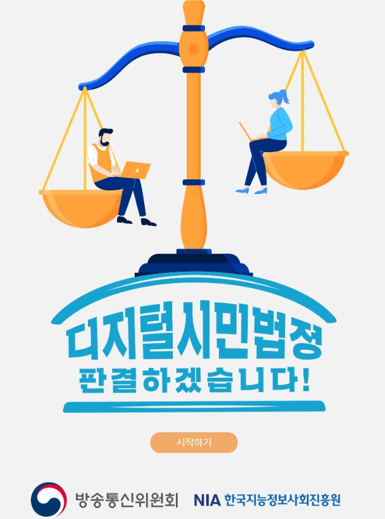

|
 |
 |
 |
세대별로 실천해야 할 개인정보 보호 수칙 아동편(초등학생 손자)_개인정보보호 실천_카드뉴스 (출처: 개인정보포털, www.privacy.go.kr) |
세대별로 실천해야 할 개인정보 보호 수칙 중장년편(부모)_개인정보보호 실천_카드뉴스 (출처: 개인정보포털, www.privacy.go.kr) |
세대별로 실천해야 할 개인정보 보호 수칙 어르신편(조부모)_개인정보보호 실천_카드뉴스 (출처: 개인정보포털, www.privacy.go.kr) |
디지털 전환 시대에 필요한 법률 탐구 : 방송통신위원회와 한국지능정보사회진흥원이 추진하고 있는 사업(아름다운 디지털 세상 (https://ainse.kr/main.do) - 청소년들이 디지털 환경에서 만날 수 있는 다양한 유형의 갈등 사례를 직접 판결해보며 디지털 윤리성 향상 악성댓글, 기프티콘, 메신저 등 사회에서 빈번하게 발생하는 디지털 갈등 사례를 판사가 되어 직접 판결해보고 사건을 깊이 있게 생각해 보는 기회 제공 |